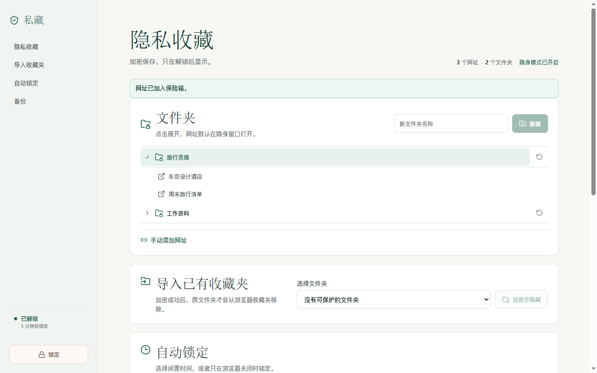

01 / SAVE
Pick or create a folder
Keep sensitive links inside a dedicated private folder.
Encrypt and hide sensitive bookmarks with a master password, open them in incognito windows, and keep encrypted backups wherever you choose.

When locked, protected folder names, titles, and URLs are not shown in the extension interface.
Protect an existing folder or create an empty private folder and save the current page to it.
Keep sensitive links inside a dedicated private folder.
Everything is encrypted on your device. The password is neither stored nor sent to the developer.
Protected URLs open in an incognito window after you grant the browser permission.
No new account. No developer-operated server. No need to abandon the storage you already trust.
Choose a private folder from the popup and send the active tab directly into your vault.
Keep the five-minute default, choose another idle time, or lock only when the browser closes.
Snapshots are encrypted before upload. Preview restores before changing current data.
Bookmark data is encrypted before it is stored or uploaded. There is no developer backend, advertising, analytics, or behavioral tracking.
Read the privacy policy →